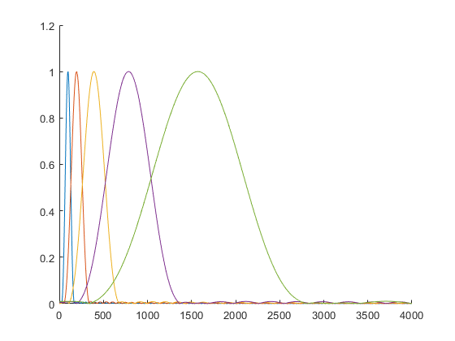
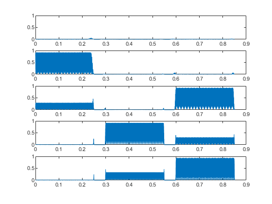

close all
clear
idx = 1:5;
lowRad = ones(length(idx), 1);
lowRad(1) = 440*2^((16-49)/12) / 8000 * 2 * pi;
for k = 2:5
lowRad(k) = lowRad(k-1) * 2;
end
highRad = 2.*lowRad;
centerRad = (lowRad + highRad) ./ 2;
BWL = 0.141372 * 81;
ww = 0:(pi/1000):pi;
L = BWL ./ (highRad - lowRad);
windows = cell(length(idx),1);
figure
hold on
for i = idx
windows{i} = gen_hamming(centerRad(i),round(L(i)));
HH = freqz(windows{i}, 1, ww);
windows{i} = windows{i} ./ max(HH);
HH = freqz(windows{i}, 1, ww);
plot(ww / 2 / pi * 8000, abs(HH));
end
N = 0.85*8000;
xx = zeros(N,1);
t = zeros(N,1);
for i = 1:N
t(i) = i/8000;
end
for i = 1:round(0.25*8000)
xx(i) = cos(2*pi*220*i / 8000);
end
for i = round(0.25*8000) + 1:round(0.30*8000)
xx(i) = 0;
end
for i = round(0.30*8000) + 1:round(0.55*8000)
xx(i) = cos(2*pi*880*i / 8000);
end
for i = round(0.55*8000) + 1:round(0.60*8000)
xx(i) = 0;
end
for i = round(0.60*8000) + 1:round(0.85*8000)
xx(i) = cos(2*pi*440*i / 8000) + cos(2*pi*1760*i / 8000);
end
output = zeros(length(xx), length(windows));
figure
for i = idx
yy = conv(windows{i}, xx);
output(:, i) = yy(round(L(i)):end);
subplot(length(idx),1,i);
plot(t, abs(output(:,i)));
ylim([0,1])
end
 